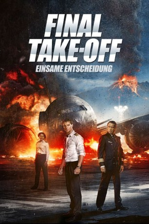

#9454 Final Take-Off - Einsame Entscheidung
 gesehen am 03.09.2018
gesehen am 03.09.2018
 
 IMDB-Wertung: 6.9 / 10
IMDB-Wertung: 6.9 / 10  Metascore: 0
Metascore: 0 
Weil er einen unsinnigen Befehl nicht ausführen will, fliegt der talentierte junge Pilot Alexey aus der Armee. Mit seiner sehr direkten Art ist er auch bei den Kollegen im neuen Job bei einer zivilen Fluglinie nicht sonderlich beliebt. Doch als die Crew auf einem Flug einen dringenden Notruf erhält, muss sie auf Gedeih und Verderb zusammenhalten.
Jahr: 2016
Dauer: 123 Minuten
FSK: 12
Land: Russland Studio: Sony Pictures Home EntertainmentTonspuren:
Untertitel: Deutsch,
Auflösung: 1080p (1920x808) Größe: 5232 MB
Genre: Action, Drama, Abenteuer
Regisseur: Nikolay Lebedev
Drehbuch: Tikhon Kornev, Yuriy Korotkov, Nikolay Kulikov, Nikolay Lebedev, Aleksey Onishchenko
Soundtrack: Artem Vassiliev
Darsteller:
 Vladimir Mashkov als Leonid Zinchenko
Vladimir Mashkov als Leonid Zinchenko- Agne Grudyte als Alexandra
- Sergey Shakurov als Nikolai Gushchin
- Sergey Gazarov als Shestakov
- Rayanna Dibs als Alexandra
 Danila Kozlovsky als Alexey Gushchin
Danila Kozlovsky als Alexey Gushchin- Irina Pegova als Lena
- Katerina Shpitsa als Vika
- Elena Yakovleva als Irina
- Egor Morozov als Valera
- Sergey Romanovich als Valera
- Yang Ge als Liu
- Alexander Drozhzhin als Airport safety clerk
- Vera Ivanova als
- Sergey Kempo als Steward Andrey
- Ekaterina Vinogradova als Nerse
Datei: X:\2016(A-F)\Final Take-Off - Einsame Entscheidung (2016, FSK12, 1920x808).mkv seit 03.09.2018
Festplatte: HD 2016(A-Z)
 Es gibt insgesamt 147 Filme in der Gruppe '2016(A-F)'
Es gibt insgesamt 147 Filme in der Gruppe '2016(A-F)'